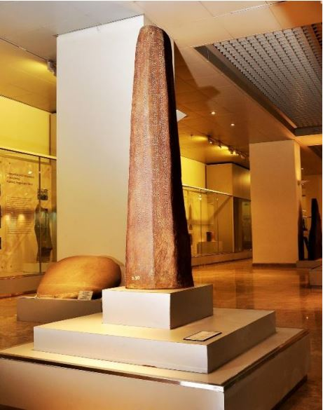

Sumber Sejarah Kerajaan Sriwijaya

Letak Kerajaan Sriwijaya sendiri masih dipersoalkan hingga saat ini. Pendapat yang
cukup populer adalah yang dikemukakan oleh beberapa ahli, diataranya :
a. G. Coedes pada tahun 1918 bahwa pusat Sriwijaya ada di Palembang. Meskipun
pendapat ini juga problematis karena sedikitnya penemuan arkeologis di
Palembang.
b. J.L. Moens misalnya, merekonstruksi peta Asia Tenggara menggunakan berita - berita Cina dan Arab menyimpulkan bahwa Sriwijaya tadinya berpusat di Kedah,
kemudian berpindah ke Muara Takus.
c. Soekmono, dalam pendapat lain menyampaikan Jambi sebagai lokasi yang tepat
bagi pusat Sriwijaya karena lokasinya yang terlindung karena ada di dalam teluk
namun menghadap langsung ke laut lepas.
Sampai dengan hari ini, Palembang masih dianggap sebagai pusat Sriwijaya dengan
banyak perdebatan. Jambi, Kedah, Chaiya (Thailand Selatan), dan bahkan Jawa sempat
dinyatakan sebagai pusat Sriwijaya karena penemuan dari masing-masing peneliti.
Beberapa ahli sampai pada kesimpulan bahwa Sriwijaya yang dianggap bercorak
maritim memiliki kebiasaan untuk berpindah-pindah pusat kekuasaan. Hal ini mungkin
saja terjadi, mengingat teori Mandala yang diungkapkan oleh Robert von Heine-Geldern
yang menyatakan bahwa pusat dari kerajaan-kerajaan kuno Asia Tenggara adalah raja itu
sendiri dan pengaruhnya. Bukan kekuasaan teritorial, maupun ibukota kerajaan seperti
halnya yang terjadi di Eropa, misalnya.
Kerajaan Sriwijaya merupakan sebuah kerajaan besar yang terletak di Sumatra
Selatan. Menurut para ahli,pusat Kerajaan Sriwijaya ada di Palembang dan diperkirakan
telah berdiri pada abad ke-7 M. Awalnya, Sriwijaya hanya kerajaan kecil. Sriwijaya
berkembang menjadi kerajaan besar setelah dipimpin oleh Dapunta Hyang. Dapunta
Hyang berhasil memperluas daerah kekuasaannya dengan menaklukkan kerajaan-kerajaan
di sekitarnya. Sriwijaya berkembang sampai abad ke 13, dan sejak itu Sriwijaya berhasil
ditaklukkan oleh San Fo Tsi (Swarnabhumi).
Faktor yang mendorong Sriwijaya muncul menjadi kerajaan besar adalah sebagai
berikut :
✓ Letaknya yang sangat strategis di jalur perdagangan antara India dengan Cina.
✓ Kemajuan pelayaran dan perdagangan antara Cina dan India melalui Asia Tenggara.
✓ Runtuhnya Kerajaan Funan di Indocina. Dengan runtuhnya Funan memberikan
kesempatan kepada Sriwijaya untuk berkembang sebagai negara maritim
menggantikan Funan.
✓ Sriwijaya mempunyai kemampuan untuk melindungi pelayaran dan perdagangan di
perairan Asia Tenggara dan memaksanya singgah di pelabuhan-pelabuhan.
Kepercayaan masyarakat sriwijaya yakni agama Buddha yang diperkenalkan di
Sriwijaya pada tahun 425 Masehi. I Tsing melaporkan bahwa Sriwijaya menjadi rumah bagi
sarjana Buddha sehingga menjadi pusat pembelajaran agama Buddha, yaitu aliran Buddha
Mahayana, Hinayana, Pendeta Budha yang terkenal di Sriwijaya diantarana adalah
Dharmapala dan Sakyakirti.
❑ Dharmapala adalah seorang guru besar agama Budha dari Kerajaan Sriwijaya. Ia
pernah mengajar agama Budha di Perguruan Tinggi Nalanda (Benggala).
❑ Sakyakirti adalah guru besar yang mengarang buku Hastadandasastra.
Di dunia perdagangan, Sriwijaya menjadi pengendali jalur perdagangan antara India dan
Tiongkok, yakni dengan penguasaan atas Selat Malaka dan Selat Sunda. Orang Arab
mencatat bahwa Sriwijaya memiliki aneka komoditas seperti kapur barus, kayu gaharu,
cengkeh, pala, kepulaga, gading, emas, dan timah, yang membuat raja Sriwijaya sekaya
raja-raja di India. Sehingga Sriwijaya mendapat kepercayaan dari vassal-vassal- nya di
seluruh Asia Tenggara.
Karena alasan itulah Sriwijaya harus terus menjaga dominasi perdagangannya dengan
selalu mengawasi dan jika perlu memerangi pelabuhan pesaing di negara jirannya.
Keperluan untuk menjaga monopoli perdagangan inilah yang mendorong Sriwijaya
menggelar ekspedisi militer untuk menaklukkan bandar pelabuhan pesaing di kawasan
sekitarnya dan menyerap mereka ke dalam mandala Sriwijaya.
Faktor factor yang mendorong Sriwijaya memiliki kedudukan yang sangat baik dalam
perdagangan internasional :
1. Kerajaan Sriwijaya mempunyai letak yang sangat strategis, yaitu di tengah-tengah
jalur pelayaran perdagangan antara India dan Cina Sehingga aktivitas perekonomian
masyarakatnya tergantung pada pelayaran dan perdagangan.
2. Kerajaan Sriwijaya dekat dengan Selat Malaka yang merupakan urat nadi
perhubungan bagi daerah-daerah di Asia Tenggara.
3. Dukungan pemerintahan raja yang cakap dan bijaksana seperti Balaputradewa.
Pada masanya Sriwijaya memiliki armada laut yang kuat yang mampu menjamin
keamanan di jalur-jalur pelayaran yang menuju Sriwijaya, sehingga banyak pedagang dari
luar yang singgah dan berdagang di wilayah kekuasaan Sriwijaya tersebut.
Kerajaan Sriwijaya mampu menguasai lalu lintas pelayaran dan perdagangan
internasional selama berabad-abad dengan menguasai Selat Malaka, Selat Sunda, dan Laut
Jawa. Setiap pelayaran dan perdagangan dari Asia Barat ke Asia Timur atau sebaliknya
harus melewati wilayah Kerajaan Sriwijaya yang meliputi seluruh Sumatra, sebagian Jawa,
Semenanjung Malaysia, dan Muangthai Selatan. Keadaan ini juga yang membawa
penghasilan Kerajaan Sriwijaya terutama diperoleh dari komoditas ekspor dan bea cukai
bagi kapal kapal yang singgah di pelabuhan-pelabuhan milik Sriwijaya. Komoditas ekspor
Sriwijaya antara lain kapur barus, cendana, gading gajah, buah-buahan, kapas, cula badak,
dan wangi-wangian. Kerajaan ini merupakan kerajaan maritime yang bersifat metropolitan.
a. Berita dalam Negeri
Berita-berita dalam negeri berasal dari prasasti-prasasti yang dibuat oleh raja-raja dari
Kerajaan Sriwijaya. Prasasti tersebut sebagian besar mengguna-kan huruf Pallawa dan
bahasa Melayu Kuno. Prasasti itu antara lain sebagai berikut
Prasasti berangka tahun 684 M itu menyebutkan bahwa Raja Sriwijaya bernama Dapunta Hyang membawa tentara sebanyak 20.000 orang berhasil menundukkan Minangatamwan. Dengan kemenangan itu, Kerajaan Sriwijaya menjadi makmur. Daerah yang dimaksud Minangatamwan itu kemungkinan adalah daerah Binaga yang terletak di Jambi. Daerah itu sangat strategis untuk perdagangan.
Ditemukan pada tahun 1935 di Telaga Batu, Sabukingking 2 Ilir, Palembang terdiri dari 28 baris, dihiasi lambang negara Sriwijaya berupa naga berkepala tujuh digunakan untuk pelaksanaan upacara sumpah kesetian para calon pejabat yang menggunakan huruf pallawa. Kutukan raja terhadap siapa saja yang tidak taat terhadap Raja Sriwijaya dan juga melakukan tindakan kejahatan.
Prasasti berangka tahun 684 M. itu menyebutkan tentang pembuatan Taman Srikesetra atas perintah Raja Dapunta Hyang.
berangka tahun 686 ditemukan pada tahun 1904 di daerah Karang Berahi, Jambi, yang menunjukkan penguasaan Kerajaan Sriwijaya atas daerah itu. Berisi permintaan kepada para dewa yang menjaga kedatuan Sriwijaya untuk menghukum setiap orang yang bermaksud jahat dan mendurhakai terhadap kekuasaan Sriwijaya.
Prasasti berangka tahun 686 M. itu menyebutkan bahwa Kerajaan Sriwijaya berusaha untuk menaklukkan Bumi Jawa yang tidak setia kepada Kerajaan Sriwijaya. Prasasti tersebut ditemukan di Pulau Bangka.
Prasasti berangka tahun 775 M. Ditemukan di daerah Ligor Semenanjung Malaya. Menerangkan bahwa Kerajaan Sriwijaya (Sumatera) mendirikan sebuah pangkalan di Semenanjung Malaya, daerah Ligor untuk mengawasi pelayaran perdagangan di Selat Malaka.

i. Raja Balaputradewa dari Suwarnabhumi (Sriwijaya) meminta pada raja
Dewapaladewa agar memberikan sebidang tanah untuk pembangunan
asrama yang digunakan sebagai tempat bagi para pelajar agama Buddha
yang berasal dari Sriwijaya.
ii. Raja Balaputra Dewa sebagai raja terakhir dari Dinasti Syailendra yang
terusir dari Jawa Tengah akibat kekalahannya melawan Kerajaan
Mataram dari Dinasti Sanjaya.
iii. Raja Dewa Paladewa berkenan membebaskan 5 desa dari pajak untuk
membiayai para mahasiswa Sriwijaya yang belajar di Nalanda.
iv. Kerajaan Sriwijaya menjalin hubungan dengan raja-raja di India, seperti
raja dari Kerajaan Nalanda dan Cholamandala. Kerajaan Cholamandala
kemudian memerangi Sriwijaya karena hendak menguasai Selat
Malaka.
Kerajaan Sriwijaya mulai mengalami kemunduran pada abad ke 13M. Kemunduran ini
terjadi karena adanya beberapa faktor, di antaranya adalah faktor alam, ekonomi, politik,
dan militer.
a. Faktor Geografi
Ditinjau dari faktor alam, Kerajaan Sriwijaya mengalami kemunduran karena kota
Palembang semakin jauh dari laut. Hal tersebut terjadi karena adanya pengendapan
lumpur yang dibawa oleh Sungai Musi dan sungai lainnya. Hal ini menyebabkan kapal - kapal
dagang yang datang ke Palembang semakin berkurang.
b. Faktor Ekonomi
Ditinjau dari faktor ekonomi, kota Palembang yang semakin jauh dari laut menjadi
tidak strategis lagi. Karena tidak banyak kapal dagang yang singgah, sehingga kegiatan
perdagangannya menjadi berkurang. Akibatnya pajak sebagai sumber pendapatan
semakin berkurang. Hal ini memperlemah posisi Sriwijaya.
Letak Palembang yang makin jauh dari laut menyebabkan daerah itu kurang strategis
lagi kedudukannya sebagai pusat perdagangan nasional maupun internasional. Sementara
itu, terbukanya Selat Berhala antara Pulau Bangka dan Kepulauan Singkep dapat
menyingkatkan jalur perdagangan internasionalsehingga Jambi ( Kerajaan Melayu ) lebih
strategis daripada Palembang.
c. Faktor Politik
Perekonomian Sriwijaya yang semakin lemah itu menyebabkan Sriwijaya tidak
mampu lagi mengontrol daerah kekuasaannya. Akibatnya, daerah-daerah bawahannya
berusaha untuk melepaskan diri.
• Setelah kekuasaan di Jawa Timur berkembang pada masa Airlangga, Sriwijaya
terpaksa mengakui Jawa Timur sebagai pemegang hegemoni di Indonesia bagian
timur dan Sriwijaya bagian barat.
• Dari arah timur, Kerajaan Sriwijaya semakin terdesak ketika berkembang
Kerajaan Singasari yang merupakan kelanjutan dari kerajaan Kediri , pada waktu
diperintah oleh Raja Kertanegara, Kerajaan Singasari yang bercita-cita menguasai
seluruh wilayah nusantara mulai mengirim ekspedisi ke arah barat yang dikenal
dengan istilah Ekspedisi Pamalayu. Dalam ekspedisi ini, Kerajaan Singasari
mengadakan pendudukan terhadap Kerajaan Melayu, Pahang, dan Kalimantan,
sehingga mengakibatkan kedudukan Kerajaan Sriwijaya semakin terdesak.
• Selain itu kedudukan Kerajaan Sriwijaya semakin terdesak, karena munculnya
kerajaan-kerajaan besar yang juga memiliki kepentingan dalam dunia
perdagangan, seperti Kerajaan Siam di sebelah utara. Kerajaan Siam memperluas
wilayah kekuasaannya ke arah selatan dengan menguasai daerah-daerah di
Semenanjung Malaya termasuk Tanah Genting Kra. Jatuhnya Tanah Genting Kra
ke dalam kekuasaan Kerajaan Siam mengakibatkan kegiatan pelayaran
perdagangan di Kerajaan Sriwijaya semakin berkurang.
d. Faktor Militer
Dalam segi militer, kemunduran Sriwijaya disebabkan adanya serangan militer
dari kerajaan lain antaranya sebagai berikut.
• Serangan Raja Dharmawangsa pada tahun 990 M. Ketika itu yang berkuasa di
Sriwijaya adalah Sri Sudamani Warmadewa. Walaupun serangan ini tidak
berhasil, tetapi telah melemahkan Sriwijaya.
• Serangan dari Kerajaan Colamandala yang diperintah oleh Raja
Rajendracoladewa pada tahun 1023 dan 1030. Serangan ini ditujukan ke
Semenanjung Malaka dan berhasil menawan raja Sriwijaya. Serangan ketiga
dilakukan pada tahun 1068 M dilakukan oleh Wirarajendra, cucu
Rajendracoladewa.
• Pengiriman ekspedisi Pamalayu atas perintah Raja Kertanegara, 1275-1292, yang
diterima dengan baik oleh Raja Melayu (Jambi),, Mauliwarmadewa, semakin
melemahkan kedudukan Sriwijaya.
• Serangan Kerajaan Majapahit dipimpin Adityawarman atas perintah Mahapatih
Gajah Mada pada tahun 1477 yang mengakibatkan Sriwijaya menjadi taklukan
Majapahit.
Akibat beberapa serangan tersebut, berakhirlah peranan Sriwijaya sebagai kerajaan
maritim sekaligus sebagai kerajaan yang bertaraf nasional pertama. Dengan faktor politis dan
ekonomi itu, maka sejak akhir abad ke-13 M kerajaan Sriwijaya menjadi kerajaan kecil dan
wilayahnya terbatas pada daerah Palembang. Kerajaan Sriwijaya yang kecil dan lemah akhirnya
dihancurkan oleh Kerajaan Majapahit tahun 1377 M.